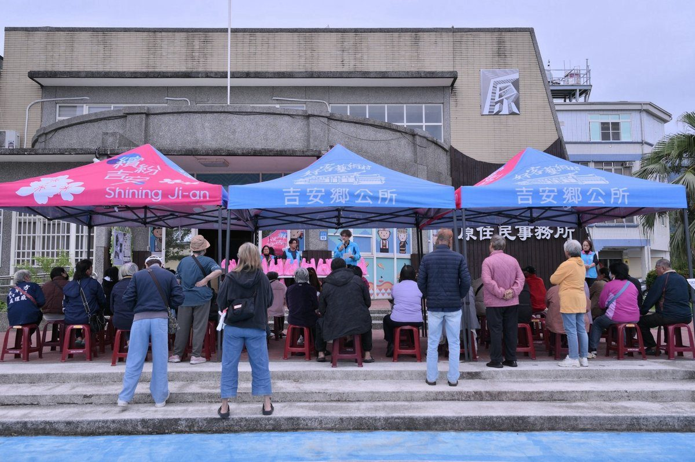

吉安鄉公所發放742台斤白米 89戶弱勢族人歲末暖心

可樂電子報小編/編輯
歲末時節，吉安鄉公所持續結合中央資源，落實原住民族社會福利照顧，把溫暖送到部落最需要的地方。公所日前在原住民事務所前辦理「發放農糧署救助白米」送暖原鄉活動，總計發出742台斤白米，共協助89戶弱勢族人家庭，讓政府的關懷與實質資源確實交到有需要的族人手中，也為地方增添一份祥和與安心。

發放當天，公所團隊分工協助白米清點、搬運與領取作業，讓流程順暢不塞車，族人不必久候。現場同時進行反詐騙宣導，提醒族人提高警覺，切勿輕信來源不明的訊息或網路謠言，如有疑慮可撥打反詐騙專線「165」查證，共同守護自身與家人的財產安全，讓愛心物資的發放也多了一層安全防護。

除了物資援助，公所人員也主動關心每一位前來領取的族人，逐一詢問生活近況、瞭解家庭實際需求，期盼透過即時關懷陪伴弱勢家庭減輕生活壓力。現場氣氛溫馨融洽，不少族人當面向工作人員道謝，也對農糧署提供物資、公所團隊的用心服務表達肯定與感謝，讓寒冬中的部落更添暖意與人情味。
游淑貞鄉長表示，照顧弱勢、關懷鄉親一直是吉安鄉公所持續努力的重要工作，歲末之際特別感謝農糧署提供白米資源，讓民生物資能即時送達有需要的家庭。她說，這次發放也展現中央與地方攜手合作、共同守護弱勢的具體成果，未來會繼續把每一份資源用在最需要的地方，不讓任何一個家庭被遺漏。

鄉公所也提醒，弱勢照顧不應有所遺漏。民眾若發現部落裡有尚未列冊、但實際面臨生活困難的族人，歡迎主動向鄉公所通報，洽詢電話為（03）8545586轉原住民事務所。公所將安排人員到宅訪視，實地瞭解家庭狀況與實際需求，並視情況提供適切的物資或福利協助，讓有需要的族人都能及時獲得幫助。
公所未來將持續秉持「主動關懷、即時服務」的精神，整合中央與地方資源、深化基層照護網絡，讓關懷不只停留在一次性的物資援助，而是長期的陪伴與支持。同時也會持續關注弱勢家庭在生活、教育及社會福利等面向的需求，透過多元福利措施與主動訪視，讓每一份需要都被看見，共同打造溫暖、幸福且充滿支持力量的友善家園。
🌟 掌握花蓮在地第一手資訊・歡迎訂閱追蹤
深度紀實報導、在地精采影音專題，第一時間接收最新消息！